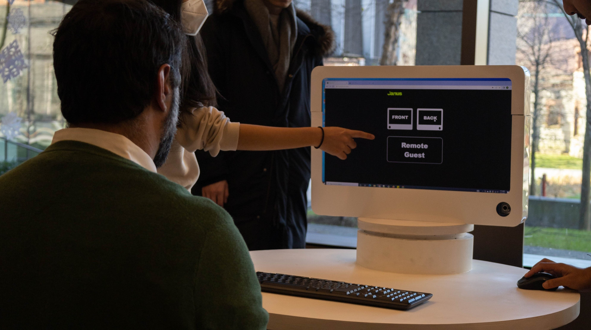
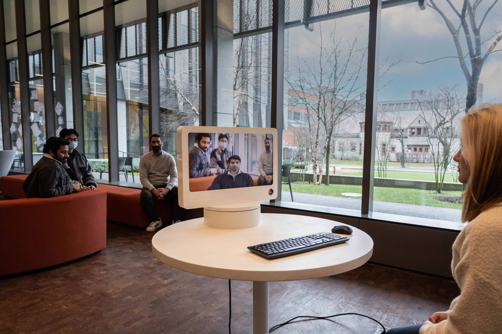
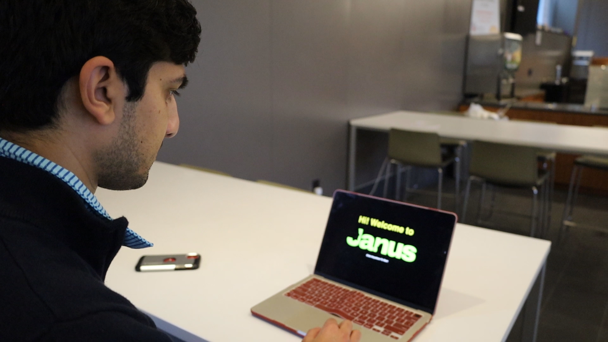
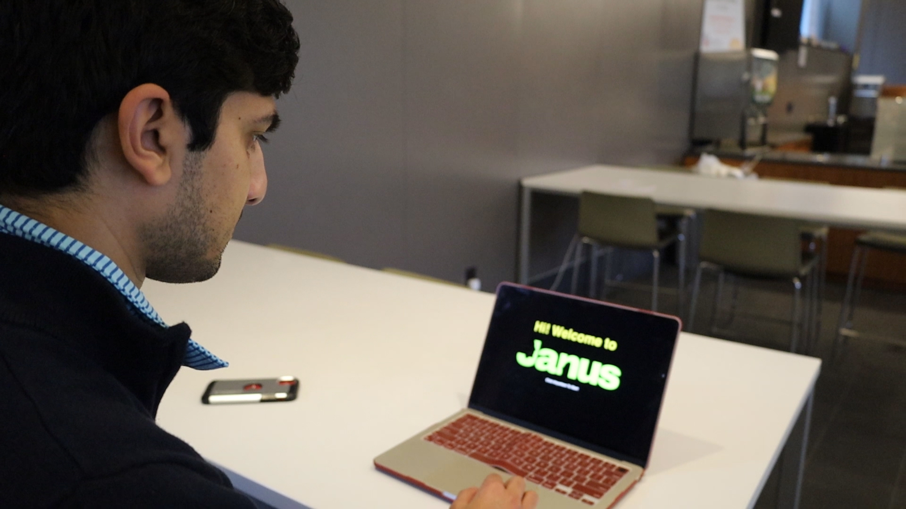
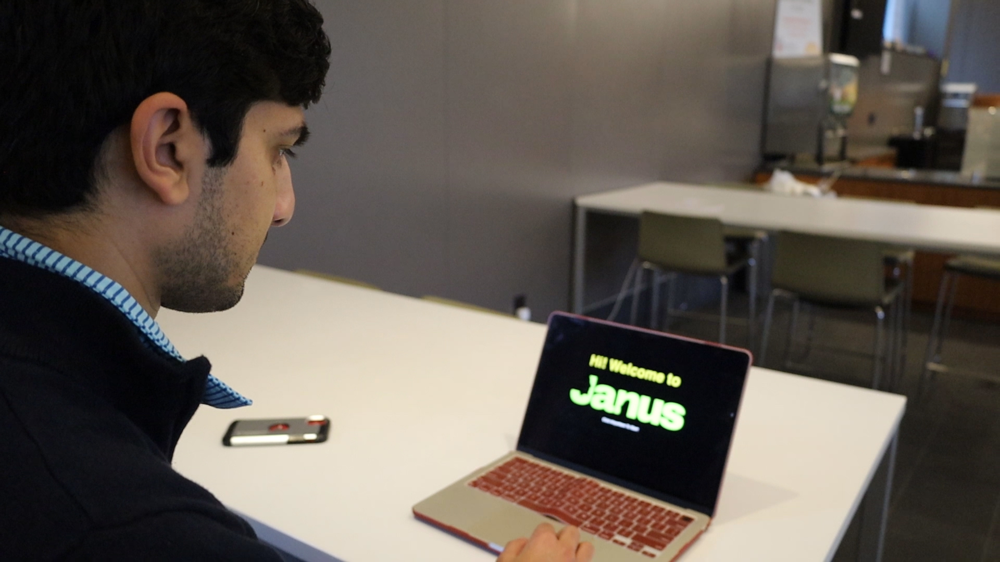
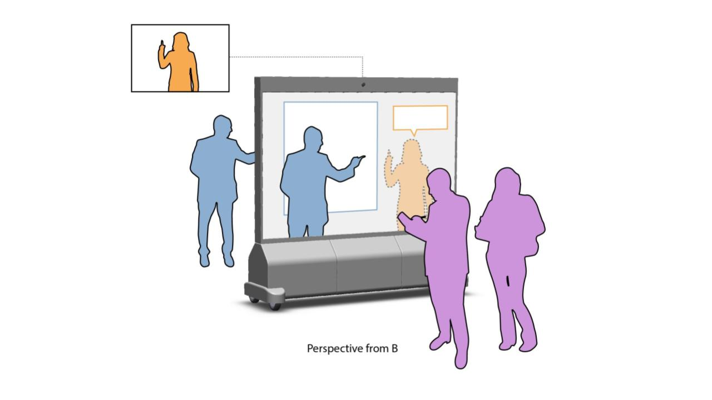
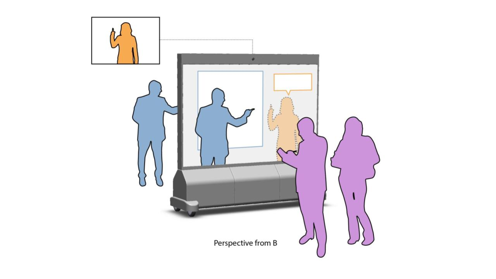

Integrating Interfaces into Furniture:
New Paradigms for Ubiquitous Computing, Extended Reality, and Telepresence within the Built Environment


Integrating Interfaces into Furniture:
New Paradigms for Ubiquitous Computing, Extended Reality, and Telepresence
within the Built Environment
How can we improve online conferencing app and feel more immerseive enviroment?
2022 - On going project
Tools: Figma, Illustrator, HTML, and CSS
Role: User Researcher and Designer
Professor: Ian Gonsher (School of Engineering and Department of Ccomputer Science at Brown)
Researchers: Jinha Kang, Michael Chandler, Li June Choi,Kevin Hsu, Leon Lau, Tianyi Shao, Maya Fleischer,
Mandy He, Vanessa Chang, Asad Khan, Ray Sun, Jiawei Lu, James Li, Keyu Zhu, Arun Kavishwar
Process
User Planning (User Sinario) > User Research > Wire Framing > Design Iteration > User Testing
Tools: Figma, Illustrator, HTML, and CSS
Role: User Researcher and Designer
Professor: Ian Gonsher (School of Engineering and Department of Ccomputer Science at Brown)
Researchers: Jinha Kang, Michael Chandler, Li June Choi,Kevin Hsu, Leon Lau, Tianyi Shao, Maya Fleischer,
Mandy He, Vanessa Chang, Asad Khan, Ray Sun, Jiawei Lu, James Li, Keyu Zhu, Arun Kavishwar
Process
User Planning (User Sinario) > User Research > Wire Framing > Design Iteration > User Testing

 


 
